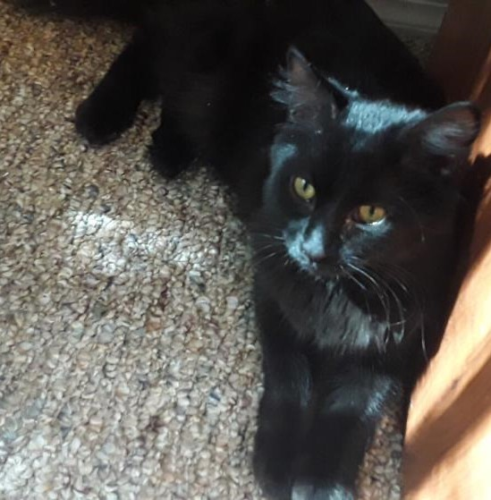

My Cats' Website
This website is dedicated to my cats. But it is also a personal project for my portfolio that shows my abilities in responsive web design. Please have a look around and hope you enjoy! :)
Lily
She is a tabby-calico mix with a sweet temperament and a kind heart. She is five years old and loves spending her days sleeping, bird-watching, and playing with her sister. Although she is cute and cuddly, she is also very mischievous and likes to steal any bread that she has access to.
Luna
Nickname Tuna. She is a very fluffy black cat with a playful attitude and a fun demeanor. One year old and wild. But she is also soft, both inside and out. After a long day of play, her favorite thing to do is cuddle up to her sister and sleep. She likes playing one-sided fetch. Throw a ball and she'll chase after it, but she won't return it.
